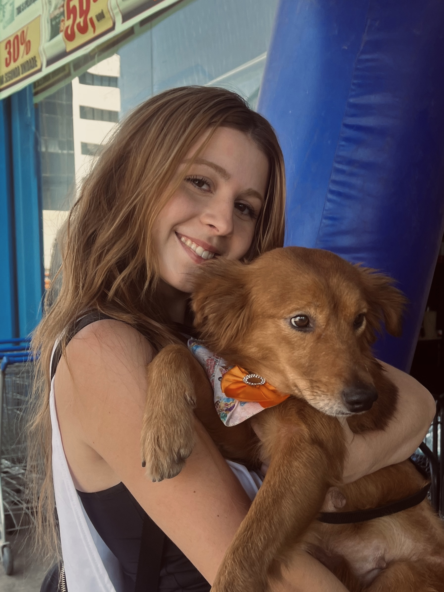

Plataforma gratuita que conecta animais abandonados do DF com pessoas que querem adotar. Simples, rápido e feito com amor pela comunidade.
Sem burocracia, sem custo. Qualquer pessoa pode ajudar um animal a encontrar uma nova família.
Você encontrou um animal abandonado nas ruas do DF e quer ajudar a encontrar um lar.
Abre o PatasDF em qualquer celular, sem precisar criar conta ou instalar nada.
Nome, tipo, idade, foto e contato. Todo o cadastro leva menos de 2 minutos.
Os dados vão direto para a plataforma e o animal aparece visível no mapa do DF.
Quem quer adotar vê o animal, entra em contato com o responsável e a história muda.
Carregando animais disponíveis...
🔍
Nenhum animal encontrado com esse filtro.
Cada marcador é um animal esperando por um lar no DF. Integrado com Google My Maps — gratuito e sem servidor.
Aqui será exibido o Google My Maps com todos os animais disponíveis para adoção em tempo real.
Para configurar: crie um mapa no Google My Maps e cole o link do iframe acima no código.
Você não precisa adotar para salvar uma vida. Cada pequena ação conta.
Abra sua casa para um animal que precisa de amor. A adoção responsável transforma duas vidas: a sua e a dele.
Quero adotarNão pode adotar definitivamente? Cuide de um animal por um tempo enquanto ele não encontra um lar permanente.
Quero ser lar temporárioCompartilhe os animais nas redes sociais. Um repost pode ser a virada de vida de um bichinho que precisa de um lar.
Ver animais para divulgar
"Queria usar a tecnologia para gerar algum impacto social. Vejo muitos animais precisando de um lar e muitas pessoas querendo adotar — então pensei em criar algo simples que pudesse conectar essas duas coisas."
Sempre gostei muito de animais. Tive o Bolt, um vira-lata adotado cheio de energia, e a Max, que me acompanhou durante o meu intercâmbio. A partida recente da Max me tocou e me deu coragem de transformar a dor em ação.
O PatasDF nasceu da vontade de contribuir com a comunidade mesmo com a rotina corrida — juntando tecnologia com uma causa que me move de verdade.
Conheça minha história completa →Ao cadastrar um animal, ele fica visível para centenas de pessoas do DF que estão procurando adotar. Quanto mais informações você fornecer, mais rápido ele encontra um lar.
Ao cadastrar, você concorda que as informações serão compartilhadas publicamente para facilitar a adoção.
Em breve ele aparecerá no mapa e na lista de animais disponíveis. Obrigado por ajudar a mudar uma vida!
Preencha o formulário abaixo e entraremos em contato com animais compatíveis com o seu perfil.
Ao preencher este formulário, você entra para nossa lista de adotantes interessados. Quando um animal compatível com o seu perfil for cadastrado, entraremos em contato.
🐾 A adoção no PatasDF é sempre gratuita. Adote seu novo melhor amigo!
O que esperamos de um adotante responsável:
Não encontrou o que procura? Veja todos os animais na seção Animais disponíveis.
Suas informações serão usadas apenas para encontrar o animal mais compatível com você.
Muito obrigado! Quando um animal compatível com o seu perfil for cadastrado, entraremos em contato pelo WhatsApp informado. Você está salvando uma vida!
O lar temporário é fundamental para animais que precisam de cuidados enquanto aguardam adoção. Você não precisa adotar definitivamente — apenas acolher por um tempo.
⏳ A duração média do lar temporário no DF é de 2 a 8 semanas.
O que o lar temporário envolve:
Entraremos em contato assim que houver um animal que combine com seu perfil.
Seu cadastro de lar temporário foi registrado com sucesso. Entraremos em contato quando houver um animal compatível esperando por um lar como o seu.
Leva menos de 2 minutos. Sem cadastro, sem custo. Só amor e comunidade.
🐾 Cadastrar animal agora